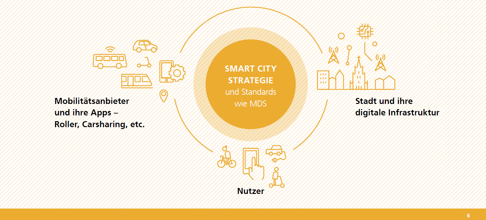

Mobilität¶
Herauforderungen¶
Menschen und Güter zu bewegen und Distanzen zu überbrücken – das sind zentrale Ermöglichungsaufgaben einer Stadt, die wächst und durch große Infrastrukturprojekte näher an die umliegenden Metropolen heranrückt. Dabei steht Ulm zusätzlich vor der Aufgabe, die außergewöhnlichen Herausforderungen des Oberzentrums für eine Region erfüllen zu müssen. Regionale Zusammenarbeit, eine vielfältige Akteurslandschaft, ein System von wettbewerblichen und staatlichen Strukturen müssen in einem heute schon ausgeprägt heterogenen komplexen System neu ausgerichtet, neu gedacht werden und sind vernetzter und vielfältiger. Dabei sind die Kommunen als Wirtschaftsstandort, als Aufgabenträger im Nahverkehr, als Infrastrukturgarant, als kommunale Selbstverwaltung, in Teilen als Eigentümer von Stadtwerken und damit als zentraler Akteur im System in eine ungewöhnliche Aufbruchstimmung mit hohen Erwartungshaltungen versetzt. Stichworte wie Mobilitätswende, Energiewende und Klimawandel stehen für den teils grundlegenden Veränderungsdruck in einem heterogenen, komplexen und hochpolitischen System. Neue Formen des gesellschaftlichen Zusammenlebens, des Wohnens, Arbeitens und der Freizeitgestaltung erfordern eine veränderte Mobilität. Neue Technologien schaffen weitere Mobilitätsalternativen. Gesellschaftliche und politische Debatten setzen veränderte Rahmenbedingungen. Mobilität ist eines der Megathemen der nächsten Jahre – auch und besonders für die Kommunen.
Digitale Ansätze können hier im Sinne individueller, auf verschiedene Bevölkerungsgruppen zugeschnittener Mobilitätslösungen, flexible und anpassungsfähige Angebote machen und dadurch helfen, Luft- und Umweltverschmutzung zu reduzieren. Digitale Technologien und Lösungen sind sowohl selbst neue innovative Produkte und Dienstleistungen, sie ermöglichen und unterstützen aber auch neue und veränderte Mobilitätslösungen anderer Akteure. Sie sind Innovator und Ermöglicher. Digitale Lösungen wirken auf nahezu alle kommunalen Handlungsfelder, besonders in der Mobilität. Dies geht insbesondere einher mit einem Paradigmenwechsel der Stadtentwicklung und -planung. Während vor der Jahrtausendwende – gemäß dem Ideal der autogerechten Stadt – noch breite Fahrbahnen, viele Parkplätze und schmale Gehwege vorgesehen wurden, sind die Ansprüche an das Nebeneinander verschiedener Mobilitätsformen und der zugehörigen Infrastruktur deutlich gestiegen. Neue Mobilitätskonzepte müssen für die Infrastruktur- und Verkehrsplanung Themen wie Inklusion, regionale Vernetzung, stark zunehmenden Radverkehr, unterschiedliche Antriebsformen, Sharing-Modelle und die Erschließung der letzten Meile mitdenken.
Der Raum in der Stadt ist begrenzt, eines der knappsten Güter der urbanen Stadt. Der motorisierte Individualverkehr (MIV) beansprucht für sich viel der verfügbaren Fläche und die verschiedenen Mobilitätsträger stehen meist in Konkurrenz zueinander und ergänzen und vernetzen sich zu wenig. Zusammen mit einer hohen CO2- und Luftschadstoffemission, dem Unfallrisiko, der Lärmbelastung und steigenden Fahrt- und Transportzeiten aufgrund hoher Verkehrsdichte ist es im vitalen Interesse der Stadt, Mobilität stärker jenseits des motorisierten Individualverkehrs neu zu denken und schrittweise um- und auszubauen.
Neben den Verkehrs- und Transportmitteln ist die Stadt verantwortlich für die Infrastruktur. Straßen, Wege, Brücken und Plätze sind Kerninfrastrukturen und Lebensadern, die dafür sorgen, dass Leben, Wohnen und Arbeiten in der Stadt attraktiv, die Stadt erreichbar ist, dass in einem Oberzentrum wie Ulm die regionalen und überregionalen Verteilstrukturen auf der Straße und Schiene funktionieren. Dieses Funktionieren ist heute eine außergewöhnliche Herausforderung, weil die Infrastruktur meist zwischen 50 und 70 Jahre alt ist. Deren Sanierung und Modernisierung führt viele Städte nicht nur an die Grenzen ihrer finanziellen Leistungsfähigkeit, sie ist auch eine Chance für eine grundlegende Veränderung, für die Abkehr von der autogerechten Stadt, für eine Form der Stadtreparatur und Neuorientierung, ohne die Funktions- und Leistungsfähigkeit dieser Infrastruktur aus dem Auge zu verlieren. Besonders prägnant in der Zweilandstadt Ulm und Neu-Ulm sind dabei die Donaubrücken, verbinden sie doch einen Wirtschafts- und Lebensraum und sind gleichzeitig der sogenannte Flaschenhals in der verkehrspolitischen Strategie.
Dies bleibt nicht ohne Konsequenzen für das Selbstverständnis der Städte, besonders mit der in der Verfassung garantierten kommunalen Selbstverwaltung. Städte stellen sowohl Produkte als auch Dienstleistungen zur Verfügung. Auf der Produktseite bauen und verwalten Städte den öffentlichen Raum. Dieser besteht aus Wegerechten, Straßen, Geh- und Radwegen, Brücken, Schienen und Haltestellen, die das Reisen von Ort zu Ort ermöglichen. Um dieses Produkt zu liefern, planen die Städte sowohl Infrastruktur- als auch Betriebsinvestitionen, die mit der Flächennutzungsplanung und -entwicklung und beispielsweise Nahverkehrsplänen und Verkehrsentwicklungsplänen koordiniert werden. Als Dienstleisterin bieten die Städte neben vielen anderen Geschäftsbereichen Parkplätze, Nutzung des öffentlichen Raums und verschiedene Arten der Beförderung an. Städte müssen täglich eine Vielzahl operativer Dienste zur Verfügung stellen, die u.a. darin bestehen, Menschen in Notfällen in Sicherheit zu bringen und manchmal auch Straßen zu sperren, denjenigen, die sich versammeln und demonstrieren wollen, einen sicheren Durchgang zu gewähren und den öffentlichen Raum zu bepreisen, um Parkplätze und Lieferungen zu regulieren.
Zusammenfassend steht die Stadt Ulm vor der Herausforderung, einen digitalisierten und vernetzten Personen- und Lieferverkehr zu fördern, welcher eingebettet ist (1) in neue Arbeits- und Freizeitmodelle, (2) in integrierte Konzepte der Stadtplanung, die Distanzen und Wege reduzieren, (3) in die Vernetzung des regionalen und überregionalen Verkehrs sowie (4) in eine Verkehrsplanung, deren Mobilitätskonzepte die ökologische und urbane Lebensqualität steigern und die individuellen Anforderungen der Nutzenden in den Blick nehmen.
Die gemeinsame Entwicklung eines Gutachtens zur Zukunft der Mobilität des Alb-Donau-Kreises und der Stadt Ulm und die Übereinkunft der Städte Neu-Ulm und Ulm für eine engere Zusammenarbeit in den Themenfeldern Mobilität und Stadtentwicklung (GD 420/19) zeigen, dass sich die Städte und Landkreise in der Region aufgemacht haben, gemeinsam Mobilität neu zu denken. Die Neubaustrecke Ulm–Stuttgart und die Masterplanprojekte Citybahnhof in Ulm sind Meilensteine. Das größte Mobilitätsprojekt der nächsten Jahre ist die Regio-S-Bahn Donau-Iller mit einem Einzugsbereich von nahezu 1 Mio. EW. Daneben sind gemeinsame oder abgestimmte Nahverkehrspläne in einem modifizierten Tarifverbund Vorhaben, die die Ernsthaftigkeit von grundlegenden Veränderungen unterstreichen. Die Fortentwicklung der Stadtwerke als Mobilitätsdienstleister und als verlässlicher Partner der Kommunen illustriert dabei die Komplexität und Breite der Fragestellungen, genauso wie die Heterogenität aus dem Zusammenwirken von ländlichem Raum, dem Umland und dem Oberzentrum. Diese systemische Veränderung bleibt nicht ohne Konsequenzen für die Verwaltung, die öffentlichen und privaten Institutionen und deren Arbeitsteilung. Die Stadt Ulm verfolgt mit Gründung der neuen Abteilung Mobilität, die in enger Verbindung mit der Digitalen Agenda auch zu digitalen Mobilitätsthemen arbeitet, das Ziel, die strategischen Mobilitätsthemen zu strukturieren, koordinieren, zu bearbeiten und umzusetzen. Im Kern geht es darum, intensiv und strukturiert Mobilitätskonzepte zu entwickeln und die diversen Akteure und Handlungsstränge zusammen und zielgerichtet zu einer Umsetzung zu bringen (GD 297/19). Dabei geht es nicht nur darum, immer selbst aktiv Leistungen anzubieten. Die Stadt Ulm hat vor allem auch die Rolle, Standards und Leitlinien für private Anbieter und Initiativen vorzugeben.
Dabei ist es wichtig zu beachten, dass die Stadt als Oberzentrum nur einen, wenn auch zentralen, Akteur darstellt. Kaum ein politisches Handlungsfeld überwindet mehr denn je Grenzen, fordert zur interkommunalen Zusammenarbeit auf und stellt etablierte öffentliche wie private Institutionen auf den Prüfstand. Eine zukunftsfähige Mobilität kann nur in der engen Zusammenarbeit und mit gemeinsamen Strategien und Maßnahmen gelingen, die sich an den Mobilitätsbedürfnissen und -strömen orientiert und weniger denn je an den Grenzen der Stadt- und Landkreise oder an Ländergrenzen. Zwingend ist dabei auch eine neue Form der institutionellen Arbeitsteilung und Verantwortlichkeit, eine Klärung der Auftragnehmenden- und Auftraggebendenverhältnisse, beispielsweise im Nahverkehr, und eine selbstbewusste Wahrnehmung der jeweiligen und gemeinsamen Aufgabenträgerschaft der Kommunen. Wettbewerbliche Elemente und kommunale Garantenfunktion und Steuerungsfähigkeit müssen nicht zuletzt durch europäische Vorgaben neu ausbalanciert werden.
Deshalb gilt es, herauszufinden, wie digitale Lösungen helfen können und mit welchen Leitgedanken die Rolle als Innovator und Ermöglicher gefunden und ausgefüllt werden kann. Dies konkret für Ulm im Sinne eines Ulmer Modells ,aber auch als Beispiel für viele Städte mit ähnlichen Rahmenbedingungen und Herausforderungen.
Leitinien¶
Die Herausforderungen sind gerade im Bereich Mobilität vielfältig und komplex. In der Smart City Strategie nimmt der Themenbereich daher eine besondere Rolle ein. Dabei sollen weniger konkrete Maßnahmen und politische Ziele im Fokus stehen, sondern vielmehr Leitlinien für den zukunftsweisenden Umgang mit dem Thema Mobilität allgemein in der Stadt Ulm beschrieben werden. Die Leitlinien stellen eine digitale Infrastruktur in den Mittelpunkt, die die gegenwärtige Lage widerspiegelt und realen, analogen Dingen in der Stadt wie Bürgersteigen, Straßen, Schienen, Brücken, Schildern, Luftraum und unterirdischem Raum eine digitale Identität verleiht. Die Verwendung von Code und Sensorik eröffnet Möglichkeiten, den öffentlichen Raum zu erfassen, zu koordinieren und zu verwalten.
Navigationssysteme, Apps und angeschlossene Verkehrs-Shuttles können zusätzlich zum menschenlesbaren Äquivalent auch ein digitales Parkschild lesen. Straßensperrungen können sofort digital an Fahrzeuge, Mobilitätsdienstleister und Navigationsprodukte übermittelt werden. Heute schon können digital gesteuerte Schilder auf Autobahnen die Autofahrer*innen in Echtzeit vor einem nahenden Stauende warnen. Ähnlich wie diese Systeme können auch in der innerstädtischen Infrastruktur Schilder und andere Gegenstände Funktionen übernehmen, Informationen übermitteln oder Hinweise geben. So können die Mitarbeitenden des Konzerns Stadt durch einen umfassenden Informationsfluss schnell und flexibel auf sich verändernde Situationen reagieren.
Die für die Verkehrswende erforderlichen Anwendungen, Sensoren und Apps produzieren eine Vielzahl von Daten, die teilweise auch personenbezogen sind. Die Stadt muss dabei die Souveränität über die Daten behalten und geltende Sicherheitsstandards durchsetzen (weitere Ausführungen dazu finden sich in den Kapiteln zu Cybersicherheit, Datensouveränität usw.). Außerdem muss unter dem Teilhabeaspekt sichergestellt sein, dass alle Bevölkerungsgruppen gleichermaßen Zugang zu einer umweltverträglichen und qualitativ hochwertigen Mobilität haben. Auch müssen Akteure und Handlungsstränge aus den Themen Mobilität, Umwelt und Klimaschutz zusammengebracht werden, um die hochgesteckten Ziele – qualitative Mobilität bei steigender Umweltqualität – zu erreichen. Dabei sollen insbesondere zwei Leitlinien bzw. Instrumente zur Zielerreichung herausgestellt werden.
Offene Dateninfrastruktur für evidenzbasierte Entscheidungsfindung und Umsetzung¶
Die Stadt Ulm möchte Daten und Technologien als eine neue Art von Infrastruktur nutzen, um der Öffentlichkeit einen gleichberechtigten Zugang zu gemeinsamen Verkehrs- und Mobilitätsdiensten zu ermöglichen.

Eine gut ausgebaute und vernetzte digitale Infrastruktur in der Stadt ist die zentrale Grundlage für evidenzbasierte Entscheidungen. Dabei geht es nicht nur um Sensorik und Netzwerke, sondern gleichwohl um Standards, Konzepte und ethische Leitlinien sowie Mitarbeitende, die mit den Instrumenten und Werkzeugen umgehen können. Die digitale Infrastruktur in der Stadt soll der Stadtverwaltung eine effiziente und kostengünstige Möglichkeit geben, um durch den Einsatz von Technologie Regelungen für verschiedene Transportmittel und Mobilität generell zu gestalten. Dabei wirkt die (vor allem technische) Weiterentwicklung wie ein Katalysator, welcher die baulichen Maßnahmen in der Stadt unterstützt, lenkt und evaluiert. So können die Ziele schneller und vor allem in einem größeren Maßstab erreicht werden. Sowohl die digitale als auch die analoge Infrastruktur sind von Bedeutung und es wird beide brauchen, um erfolgreich zu sein. Es darf auch nicht vergessen werden, dass es neben den städtischen auch eine Vielzahl von privaten Mobilitätsanbietern auf dem Markt gibt, die Dienstleistungen mit unterschiedlichem Nutzen und ultimativer Rentabilität anbieten. Ohne eine adäquate digitale Infrastruktur und die Befähigung der eigenen Mitarbeitenden auf Verwaltungsseite ist es nicht möglich, hier regulierend einzugreifen und Mobilität nach den Bedürfnissen der Stadtgesellschaft und der Nachhaltigkeit zu steuern. Dazu gehört auch, Dienste privater Anbieter zu testen, das Wachstum vieler Anbieter gegenüber wenigen zu ermöglichen oder eine Größenordnung für diese Dienste zuzulassen. Neben der technischen Basisinfrastruktur geht es also auch um Themen wie den Kulturwandel in der Stadtverwaltung, Standards, Modelle für Zugriffsrechte und ethische Fragen im Umgang mit Mobilitätsdaten.
Die Mobilitätsdatenspezifikation (Mobility Data Spezifikation / MDS) ist eines der Instrumente, die die Stadt Ulm beispielhaft für das aktive Management von Mobilität durch Technologie einsetzt. MDS definiert eine Reihe von Schnittstellen für die Stadt, um digitale Dienste und Informationen für Mobilitätsdienstleister (ob staatlich oder privat betrieben) bereitzustellen. Die Mobilitätsdatenspezifikation ist ein Datenstandard und eine API-Spezifikation, die es der Stadt ermöglicht, in Echtzeit mit Mobilitätsdienstleistern (momentan Roller, später auch Bus-, Fahrrad- und Taxi-/Fahrgemeinschaftsunternehmen möglich) in Kontakt zu treten. Hierbei geht es darum, Mobilitätsdaten sowohl in Echtzeit als auch auf historischer Basis auszutauschen. Dazu gehören Informationen wie Fahrzeugstandort, Fahrtdauer und Servicebereiche seitens der Anbieter. Von Seiten der Stadt besteht der digitale Service darin, aktiv aktuelle Verwaltungsinformationen in Echtzeit, wie z.B. digitale Straßensperrungen, Parkbeschränkungen, Behindertenparkplätze, Positionierung fahrender Einsatzfahrzeuge dem Anbieter zur Verfügung zu stellen.
Dabei ist es Ziel der Smart City Strategie, digitale Kommunikation in Echtzeit zu nutzen, um Mobilitätspolitik und -regulierung zum Ausdruck zu bringen und die Mobilität der Stadt zu regeln. Zu verwenden sind dabei digitale Tools (wie beispielsweise MDS), die es uns ermöglichen, anonym mit den Anbietern der Flotten zu kommunizieren. Hierdurch kann eine Vielzahl von digitalen Infrastrukturdiensten gemanagt werden, wie z.B. digitales Parken, Feuerwehrzufahrten oder digitale Benachrichtigungen bei Straßensperrungen. Heute schon nutzt die Stadt Ulm digitale Werkzeuge, um gemeinsam genutzte Roller in Übereinstimmung mit den vom Stadtrat festgelegten Richtlinien und Vorschriften zu steuern. Morgen werden die gleichen Werkzeuge bei der Kommunikation mit autonomen Autos, Drohnen und was immer die Zukunft sonst noch bereithält, helfen.
Bedarfsorientierte Angebote zu Mobility as a Service (MAAS)¶
Nutzer:innen erwarten digitale und mobile Anwendungen für die Recherche und Buchung von Mobilitätsangeboten. Lange Registrierungsprozesse, umständliche Buchungssysteme und eine Vielzahl unterschiedlicher Anwendungen machen das Angebot schon vor der Nutzung unattraktiv. Um den Individualverkehr zu reduzieren und den ÖPNV attraktiver zu machen, ist es außerdem nötig, auch die letzte Meile noch besser zu erschließen.
Mobilitätsdienste können von verschiedenen Anbietern zur Verfügung gestellt und als multimodaler Service angeboten und abgerechnet werden. Dabei geht es nicht darum eine Plattform für alles zu schaffen, sondern vielmehr darum, die rechtlichen und organisatorischen Rahmenbedingungen zu schaffen, Mobilitätsangebote und Transportmittel auf die Bedürfnisse und Anforderungen der Nutzer:innen abzustimmen und das Verkehrsaufkommen durch Ride-Sharing und effizienten ÖPNV zu senken.
„Das Hauptkonzept von MaaS besteht darin, die Nutzer*innen in den Mittelpunkt der Verkehrsdienste zu stellen und maßgeschneiderte Mobilitätslösungen auf der Grundlage individueller Bedürfnisse anzubieten. Zum ersten Mal wird dadurch ein einfacher Zugang zum geeignetsten Verkehrsmittel oder Dienst in einem Bündel flexibler Reisedienstleistungsoptionen für Endnutzer geboten.“
Ziel ist es, dass auf die Vielzahl von Angeboten und Services möglichst einfach zugegriffen werden kann. Zentrale Plattformen sind kein Allheilmittel, sondern führen eher wieder zu Silos und Zugangsbeschränkungen. Vielmehr zeigen OpenBike und Digitransit (siehe Projekte) wie offene Schnittstellen dazu beitragen können, Informationen und Services so zu gestalten, dass sie möglichst reibungslos auch anderweitig verarbeitet werden können.
Bedarfsorientierte Angebote zur geteilten Mobilität und Mobilität als Service (MAAS) sind: einheitliche Plattformen, Zugänge und Informationsbereitstellung, gemeinsame Entwicklung und Vermarktung von Mobilitätsangeboten der Stadt Ulm und dem Alb-Donau-Kreis.
Projekte¶
SWU 2Go: Car Sharing – ein emissionsfreies Car-Sharing-Programm
Parkraummanagement – u.a. Behindertenparkplätze mit Sensorik
Open Bike Freie/Open-Source-Software für ein (Fahrzeug-)Verleihsystem am Beispiel eines Bikesharing-Systems der Stadt Ulm, dabei wird beachtet, dass passende Open-Data-Schnittstellen integriert werden, so dass das Bikesharing-System nahtlos mit Mobilitätsangeboten wie dem ÖPNV oder Carsharing verknüpft werden kann.
Dateninventar – BMI Projekt REMIX, Öffnung aller notwendigen Datensätze und Datenquellen. Mit Hilfe von Remix können die Mitarbeiter Daten auswerten und kombinieren.
Mobilitätsstationen – Mobilitätsstationen können bequeme und einfallsreiche physische Räume bereitstellen, die so konzipiert sind, dass eine Reihe von Mobilitätsdiensten und Echtzeit-Planungsinformationen in das regionale Verkehrssystem integriert werden. Intelligente Verkehrssysteme zur besseren Verkehrssteuerung, Verkehrsreduktion – Ampelsteuerung, Kollisionsdetektoren etc., Verkehrsdatenanalyse aus historischen und Echtzeitdaten; intelligente Auslastungssteuerung mit Echtzeitdaten zur Verfügbarkeit von ÖPNV, Verfügbarkeit von Ladesäulen; Unterhaltung der bestehenden Infrastruktur und Reduzierung der Infrastrukturkosten.
Maßnahmen¶
Nr |
Titel |
Beschreibung |
|---|---|---|
01 |
Gemeinsame/Abgestimmte Nahverkehrspläne |
- |
02 |
Gründung Abteilung Mobilität |
Die Abteilung verfolgt das Ziel, strategische Mobilitätsthemen zu strukturieren, zu koordinieren, zu bearbeiten und umzusetzen. |
03 |
Digital gesteuerte Schilder |
Digital gesteuerte Schilder und andere Gegenstände können Funktionen übernehmen, Informationen übermitteln oder Hinweise geben. |
04 |
Testungen von privaten Mobilitätsanbietern |
Steuerung von privaten Mobilitätsanbietern entsprechend den Bedürfnissen der Stadtgesellschaft und übergeordneten Zielen wie der Nachhaltigkeit von Mobilitätsangeboten. |
05 |
Wachstumsförderung für private Anbieter |
Regulierendes Eingreifen, um das Wachstum vieler Anbieter gegenüber wenigen großen Anbietern zu ermöglichen und zu fördern. |
06 |
Standards für private Anbieter |
Regulierendes Eingreifen durch Schaffung von Standards für private Mobilitätsanbieter entsprechend Bedürfnissen der Stadtgesellschaft und übergeordneten Zielen wie der Nachhaltigkeit von Mobilitätsangeboten. |
07 |
Mobilitätsdatenspezifikation (MDS) |
MDS ermöglicht Schnittstellen, um digitale Dienste und Informationen für Mobilitätsdienstleister bereitzustellen sowie Informationen von entsprechenden Anbietern zu erhalten. |
08 |
Digitales Parken |
Digitale Bereitstellung von Parkinformationen, u.a. bei Behindertenparkplätzen mit Sensorik zu besseren Verkehrssteuerung. |
09 |
Digitale Benachrichtigungen |
Benachrichtigungen bei Verkehrshindernissen zur Verkehrssteuerung und Stauvermeidung. |
10 |
Einheitliche Plattformen und Informationsbereitstellung (MaaS) |
Einheitliche Plattformen, Zugänge und Informationsbereitstellung sowie die gemeinsame Entwicklung und Vermarktung von Mobilitätsangeboten (Bsp. OpenBike). |
11 |
Dateninventar BMI Projekt REMIX |
Öffnung aller notwendigen Datensätze und Datenquellen, sodass Mitarbeitende Daten auswerten und kombinieren können. Auf dieser Basis lassen sich datenbasierte Entscheidungen im Bereich von Verkehrsangeboten treffen. |
12 |
Mobilitätsstationen |
Mobilitätsstationen können bequeme und einfallsreiche physische Räume bereitstellen, die so konzipiert sind, dass eine Reihe von Mobilitätsdiensten und Echtzeit-Planungsinformationen in das regionale Verkehrssystem integriert werden. |